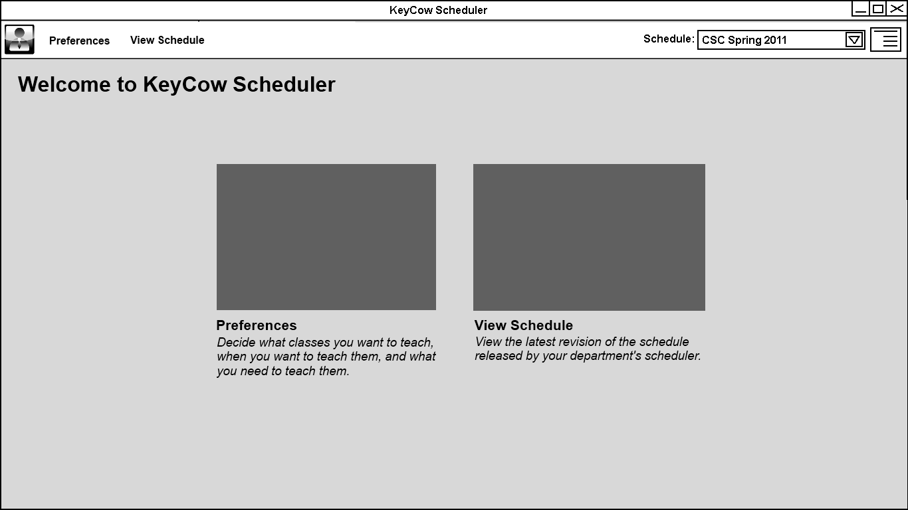

2.3.2. Add / Edit Instructor Preferences
Old Versions:
Version 1
Interface
The instructor interface consists of a navigation bar at the top of the screen, with the currently selected option filling the rest of the page.
gning in:
